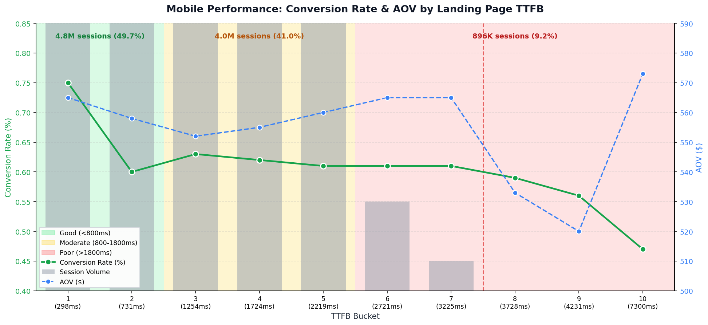
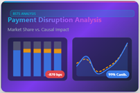
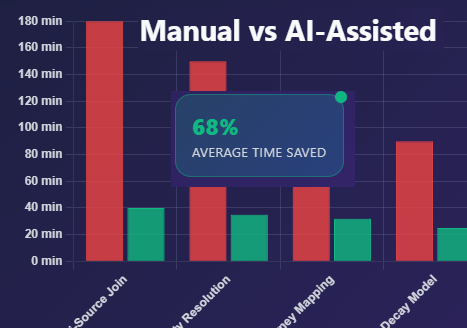
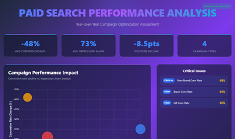
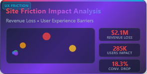
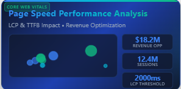

Visual
$3.8M
annual revenue from focused page-speed work
View Full-Size →

I build analytics systems that help companies make better decisions and grow revenue. Twenty years across the full data stack. A decade as a founder before becoming an enterprise analytics leader. An agentic AI workflow that turns weeks of work into days.
Examples of the visualizations and interactive dashboards I build — click any card to view full-size.

KPI frameworks, pipelines, forecasts, and the dashboards executives bet budget on — built end-to-end, without a full team in place first.
See revenue impact →Attribution that connects every dollar of spend to actual revenue — including in-store transactions, not just digital pixels.
See O2O attribution →Agentic workflows that compress weeks of analysis into days, without sacrificing rigor or auditability.
See LLM workflow →Interactive deep-dives showcasing analytical methodology, system design, and business impact
Scenario: Built an end-to-end attribution system connecting digital marketing interactions to physical store transactions at the individual customer level.
Key Finding: Enabled transaction-level marketing measurement, replacing platform-reported metrics with actual revenue contribution for budget allocation.

Scenario: Analyzed the impact of launching a new payment option to determine incremental transaction growth vs. cannibalization across existing payment methods.
Key Finding: 99% cannibalization with minimal incrementality (-0.07%), revealing market share redistribution rather than genuine growth.

Scenario: Quantified development efficiency gains from integrating LLM tools (ChatGPT/Claude) into BigQuery SQL workflows for marketing attribution and analytics queries.
Key Finding: 68% average time savings across 12 query types, with complex multi-source joins showing highest benefit (78%), enabling attribution analysis cycles to compress from weeks to days.

Scenario: Comprehensive year-over-year Google Ads performance analysis revealing systematic conversion rate declines across all campaign types despite maintained impression shares.
Key Finding: 39-59% conversion rate drops across Brand, Non-Brand, LIA, and PLA campaigns, indicating critical ad positioning and post-click optimization issues requiring immediate intervention.

Scenario: Comprehensive analysis of user experience friction points across the platform to quantify conversion barriers and prioritize optimization efforts.
Key Finding: $2.1M annual revenue loss from 6 critical friction points affecting 285K users, with product filtering representing the highest impact area.

Scenario: Comprehensive analysis of Core Web Vitals (TTFB, LCP) impact on conversion rates across device types to identify performance optimization opportunities.
Key Finding: $18.2M annual revenue opportunity from page speed optimization, with mobile PDP performance representing the highest priority at $7.3M impact.